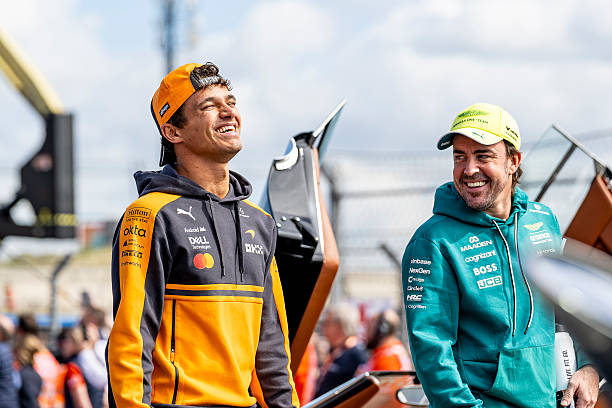
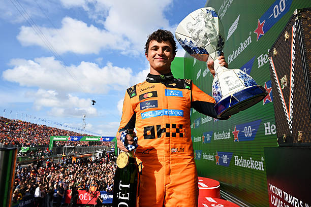
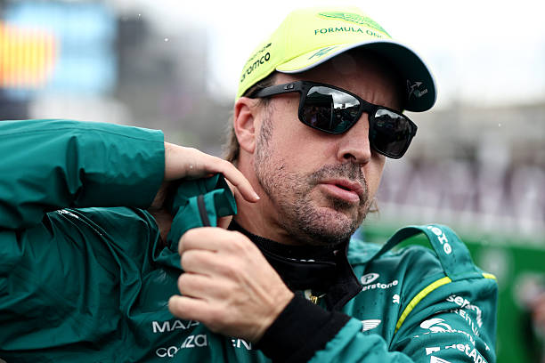

Fernando Alonso puntúa de nuevo en Zandvoort

El domingo 23 de agosto se disputó el Gran Premio de Países Bajos en el que Fernando Alonso consiguió dos puntos tras quedar en la novena posición, siendo así la segunda carrera de la temporada en la que puntúa. Además, es el único piloto en puntuar en todas las carreras disputadas en Zandvoort.
El campeón del mundo Lando Norris consiguió la victoria, seguido de Kimi Antonelli y George Russell.

En el Gran Premio de Países Bajos había grandes expectativas, no solo porque era la carrera de despedida del propio circuito, sino por ver el paquete de mejoras de Aston Martin en acción, ya que de funcionar, podríamos tener una renovación de Fernando Alonso.
La carrera quedó marcada desde el principio por el accidente de Max Verstappen. El piloto neerlandés perdió el control de su Red Bull en la primera vuelta sobre una pista todavía húmeda y golpeó las barreras, provocando una bandera roja.
Verstappen salió ileso, pero tuvo que abandonar en la que fue su última carrera de casa en Zandvoort frente a sus compatriotas.
El británico Lando Norris partió desde la pole, aunque perdió el liderato en la reanudación frente a Kimi Antonelli, el italiano llegó a dominar buena parte de la carrera. Sin embargo, Norris consiguió acercarse progresivamente y, aprovechando la estrategia y la gestión de los neumáticos, recuperó la primera posición en la parte final.
George Russell completó el podio en tercera posición, después de que Mercedes ordenara intercambiar posiciones entre sus dos pilotos. Lewis Hamilton terminó cuarto, seguido por Charles Leclerc. Oscar Piastri fue sexto y Liam Lawson protagonizó una buena actuación para Red Bull al terminar séptimo.
Para los españoles, Fernando Alonso volvió a los puntos con un noveno puesto, confirmando las mejores sensaciones de Aston Martin, mientras que Carlos Sainz terminó 16.º después de un incidente y una posterior sanción.

Fernando Alonso y Aston Martin
Toca hablar de Fernando Alonso y Aston Martin, el piloto español acabó la carrera diciendo por radio "Lovely car to drive, and more to come", recordando a la radio del GP de Baréin de 2023 en el que Alonso consiguió subir al podio.
Aún así, el español volvió a señalar a Honda y elogió a Aston Martin diciendo que el nuevo motor supone un paso atrás en manejabilidad y bajadas de marcha pero mostrándose optimista con el chasis.
También hay que decir que Aston Martin clavó las decisiones de estrategia durante la carrera, algo que sorprende viendo cómo en otros grandes premios era todo lo contrario.
Ahora metiéndonos en datos de carrera, Fernando Alonso fue el más rápido de la carrera en la sección de curvas 7 a 9 y en aire limpio en curvas fue top 4.

Aunque no todo lo que brilla es oro, Mike Krack avisó de que vienen carreras duras y que los resultados dependerán de lo largas que sean las rectas en cada circuito. El gran objetivo de Honda a corto-medio plazo es solucionar los problemas de manejabilidad. Algo que les llevará unas cuantas carreras.
Por último, destacar que Fernando Alonso, con 45 años, se convierte en el primer piloto de 45+ años en puntuar en Fórmula 1 en 52 años, una barbaridad que refleja que la edad es solo un número y que el español es de los más grandes pese a no tener un par de mundiales de Fórmula 1 más.
Próxima carrera
Libres 1 — Viernes, 12:30
Libres 2 — Viernes, 16:00
Libres 3 — Sábado, 12:30
Clasificación — Sábado, 16:00
Carrera — Domingo, 15:00